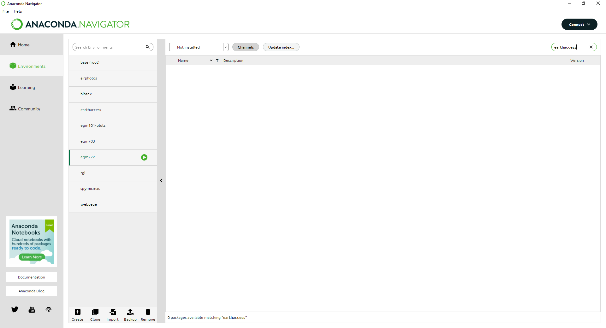
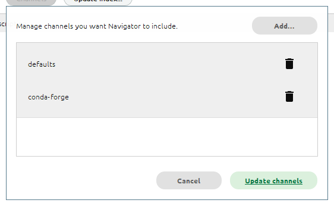
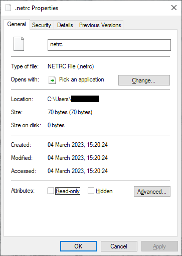

searching + downloading satellite data using earthaccess#
getting started#
The other thing you’ll need to do before starting this week’s practical is install a new python package, earthaccess, into our conda environment.
First, open up Anaconda Navigator. Make sure to switch to your egm722 environment, then click on the
Environments tab:

Change the list from Installed to Not installed, then type earthaccess into the Search bar in the
upper right-hand corner:
{kind=link}
Note
If nothing shows up here, don’t panic:
{kind=link}
It just means we need to add the conda-forge channel to the list of Channels.
To do this, first click the Channels button, then type conda-forge:
{kind=link}
Press Enter, and you should see the new channel added to the list:
{kind=link}
Click Update channels. Once the channel list finishes refreshing, you should see the earthaccess package
in the list of available packages.
Click the box next to earthaccess to select it, then click Apply in the lower right-hand corner:

You should see the following window open (note that this may take some time):
{kind=link}
Click Apply, and the packages will be downloaded/installed in the environment. While you wait for Anaconda
to finish working, you will be able to move on to the next steps.
Alternatively, go and grab a coffee or tea, and move on to the next steps.
the .netrc file#
In order to search for and download data using the earthaccess API, we will need to authenticate (log in) using your
NASA EarthData username/password.
Hint
If you don’t already have a NASA EarthData account, don’t worry. You can go to https://urs.earthdata.nasa.gov/ and
click Register (or Register for a profile). Follow the steps on the screen, making sure to save your password
using your favorite password manager of choice - you will need it to set up the .netrc file.
The earthdata.login() method (documentation)
uses a few different options for authentication (that is, confirming that you are an authorized user):
“interactive”: enter your username and password in the interpreter
“netrc”: retrieve your username and password from a
.netrcfile.“environment”: retrieve username and password from environment variables
$EARTHDATA_USERNAMEand$EARTHDATA_PASSWORD
This way of authenticating helps avoid typing your username/password into a script or notebook, which is always, ALWAYS, a bad idea.
Danger
No, seriously. NEVER, EVER type your password in plaintext in a script or a jupyter notebook.
For this exercise, we’ll set up something called a netrc or .netrc file1, which earthaccess can read to
authenticate you with NASA EarthData.
A netrc file can be used by a number of websites and programs for authentication, making it so that you don’t type your password as plaintext in a script or command prompt.
The .netrc file is a text file with a simple structure, where each line corresponds to a “machine” or website:
machine <website> login <username> password <password>
To create the file, open notepad++ (or notepad, or your text editor of choice), and enter the following line:
machine urs.earthdata.nasa.gov login <username> password <password>
remembering to replace <username> with your NASA EarthData username, and <password> with
your NASA EarthData password.
Save the file as .netrc to your Home directory (on Windows, this should be C:\Users\<your_username>).
Be sure to select All Files for Save as type:
{kind=link}
From notepad++, you should also uncheck Append extension:
{kind=link}
We’re not quite done - there’s one last thing we’ll need to do before moving on.
changing permissions#
Note
On MacOS or linux-based systems, enter the following command in a terminal window:
chmod 600 ~/.netrc
This uses the chmod command to change the permissions on the file so that only the owner of the file has
read/write access to the file (for more about chmod permissions, see this
wikipedia entry).
The last step we want to do in setting up the netrc file is to change the permissions so that other users can’t access the file. To change the permissions of the file in Windows, first open Windows Explorer.
From Windows Explorer, right-click on the file and select Properties:
{kind=link}
Click on the Security tab:
{kind=link}
then click Advanced:

Click Disable inheritance, then click Convert inherited permissions into explicit permissions on this object
in the window that pops up:

Now click Apply. Next, remove all of the rows from the table that aren’t your user name (this should be
SYSTEM and Administrators):

Click Apply, then highlight your username and click Edit. In the window that opens up, uncheck
Full control, but make sure that the other 4 available boxes are checked:

Click OK, then OK again to close the advanced security settings. You should see the permissions for the
file have changed:
{kind=link}
That’s it - you should now be able to work through the notebook (assuming that you have correctly entered your
credentials in the .netrc file, that is).
At this point, you can launch Jupyter Notebooks from the command prompt, or from Anaconda Navigator, and begin to work through the exercise.
Note
Below this point is the non-interactive text of the notebook. To actually run the notebook, you’ll need to follow the instructions above to open the notebook and run it on your own computer!
Gena Rowlands#
overview#
Up to now, you have gained some experience working with basic features of python, used cartopy and matplotlib to create a map, explored using shapely and geopandas to work with vector data, and explored using rasterio and numpy to work with raster data.
In this exercise, we’ll see how we can use an application programming
interface (API) to query and download satellite data from NASA
EarthData, using the
earthaccess API. As part of
this, we’ll also introduce a few more geometric operations using
shapely that you may find useful.
objectives#
In this example, you will:
Use
shapelyto get the unary union of a collection of shapesUse
shapelyto find the minimum rotated bounding rectangle of a geometryUse the
earthaccessAPI to search for satellite imagesUse the
earthaccessAPI to download imagesUse
rasterioto mosaic images together into a single dataset
data provided#
In this example, we will be using the Counties shapefile that we
used in Week 2.
getting started#
To get started, run the following cell to import the packages that we’ll use in the practical.
import os
import earthaccess
import geopandas as gpd
import rasterio as rio
import rasterio.merge
import shapely
preparing a search area#
Before we get to using the API to search for images, we’ll see how we
can use existing data, like the Counties shapefile we used in Week
2, to help us search for images.
We won’t be able to use particularly complicated shapes, but we can use a combination of GIS/geometric operations to get a simple outline of our data, which can be used for the search, and to help filter and refine our search results.
First, we’ll load the data using geopandas, making sure to transform
from the original CRS to WGS84 latitude/longitude (epsg=4326):
counties = gpd.read_file('../Week2/data_files/Counties.shp').to_crs(epsg=4326)
Next, we’ll use .union_all() attribute
(documentation)
to get a combination of all of the County outlines in a single geometry
feature:
# gets a single polygon (or multipolygon) composed of the individual geometries in the dataset
outline = counties['geometry'].union_all()
outline # note that in a jupyter notebook, this actually displays the polygon.
In the output of the cell above, we can see that the outline shape
is indeed the combination of all of the individual county outlines - it
looks like the outline of Northern Ireland that we also used in the Week
2 practical. We can’t use this directly in our NASA EarthData query -
for one thing, this polygon is far too complicated for the kind of query
that we perform using the API.
If we look at the documentation for earthaccess.search_data, we see
that we can pass a bounding box argument, in the form of a tuple
corresponding to the lower left longitude (minimum x), lower left
latitude (minimum y), upper right longitude (maximum x), and upper right
latitude (maximum y) values:
help(earthaccess.search_data)
To get these values from our outlines, we can use the .bounds
attribute of our Polygon:
outline.bounds # get the min x, min y, max x, max y values of the polygon
However, we can also pass a polygon argument. Rather than pass the
outline (a very complicated geometric object), though, we’ll look at one
additional attribute of a shapely Polygon that we can use to get
a bounding box of the geometry - the minimum_rotated_rectangle
(documentation):
# gets the minimum rotated rectangle that covers the outline
search_area = outline.minimum_rotated_rectangle
search_area # again, in a jupyter notebook, this displays the polygon
You can see above that this gives a boundary box of the polygon, but rather than being a simple rectangle made of the maximum/minimum coordinates, it’s rotated to be as small as possible while still covering the entire geometry. This way, we minimize the area outside of the area of interest (Northern Ireland) within our search area, while still making sure to cover the entire area of interest.
The API that earthaccess uses requires that the Polygon be
oriented counter-clockwise. To do this, we can use
shapely.geometry.polygon.orient()
(documentation):
search_area = shapely.geometry.polygon.orient(search_area, sign=1) # a sign of 1 means oriented counter-clockwise
search_area # this doesn't actually change the geometry, just the order of the vertices
That’s all we need to be able to search for images that intersect with a given geometry. Once we have this, we can connect to the API and start the search.
searching the archive for images#
connecting to the api#
To connect to the API, we first call earthaccess.login()
(documentation):
earthaccess.login(strategy='netrc')
From the API reference for earthaccess linked above, we can see that
we have a few ways of connecting. By default, it tries all of them
(strategy='all'):
'all'- try all methods until one works'interactive'- enter username and password'netrc'- retrieve username and password from~/.netrc'environment'- retrieve username and password from$EARTHDATA_USERNAMEand$EARTHDATA_PASSWORD
Because we have already set up a ~/.netrc file with our EarthData
username and password, we can just specify strategy='netrc', though
leaving this with the default 'all' should also work.
If there are no error messages or warnings, the connection was successfully created, and we can move on to searching for datasets.
searching for datasets#
Next, we’ll see how we can use earthaccess.search_datasets()
(documentation)
to see what datasets are available that match our search. For example,
let’s say that we wanted to search for data that intersect with Northern
Ireland and have to do with elevation - we can use 'elevation' as a
keyword, then pass search_area.exterior.coords (the list of
coordinates that describe the exterior of the polygon) as the
polygon argument:
datasets = earthaccess.search_datasets(
keyword='elevation', # search for datasets that match the keyword 'elevation'
polygon=search_area.exterior.coords # search for datasets that intersect Northern Ireland
)
Hopefully, you can see that there are 501 (!) datasets that fit the “elevation” keyword that we used to search from. Note that we are not limited to a single keyword - for example, we could also specify that we want elevation datasets derived from ASTER:
datasets = earthaccess.search_datasets(
keyword='aster elevation', # search for datasets that match the keyword 'aster elevation'
polygon=search_area.exterior.coords # search for datasets that intersect Northern Ireland
)
Each of the datasets included in the datasets list returned by
earthaccess.search_datasets() is a DataCollection
(documentation),
a dict-like object that contains information about the dataset,
including metadata specified by the unified metadata model (UMM).
To get a particular metadata field, we can use
DataCollection.get_umm()
(documentation).
For example, to get the full name of the dataset (the “entry
title”):
dataset = datasets[0] # get the first result
dataset.get_umm('EntryTitle') # fill this in with the metadata field that you want
As you can see above, the first entry returned by our dataset query is the ASTER Global Digital Elevation Model, version 3, or ASTER GDEM v3.
If we want to search for the granules associated with this dataset, it
helps to know at least one of the following: - the “short name” of the
dataset ('ShortName') - the direct object identifier of the dataset
('DOI') - the full name of the dataset ('EntryTitle')
If we don’t include at least one of these in our granule search, we will
likely receive an error - NASA CMR does not permit searches across all
collections (datasets) in order to provide fast responses. In the cell
below, add the correct argument to .get_umm() to get the short name
of the dataset to use in the next section:
ds_name = dataset.get_umm() # fill in the following with the correct field name to return the short name of the dataset
print(f"Dataset short name: {ds_name}")
searching for granules#
As we saw earlier, the method we’ll use is earthaccess.search_data()
(documentation),
to search datasets using NASA’s CMR (“Common Metadata Repository”)
API.
For this example, we’ll use the following arguments for the search:
short_name: the dataset short name. For a full list of available datasets, check the LPDAAC Data Catalogpolygon: a list of (lon, lat) tuples to use for spatial filteringcount: the maximum number of search results to return
To see what additional arguments are available, you can check the GranuleQuery API reference for additional keywords to use, based on the listed methods for the GranuleQuery class.
results = earthaccess.search_data(
short_name=ds_name, # search for ASTER GDEM v3 granules
polygon=search_area.exterior.coords, # search for images that intersect our search_area
count=10 # only show the first 10 results
)
The output of earthaccess.search_data() is a list of
DataGranule objects that describe each of the images that match our
criteria. You should see that .search_data() tells us the total
number of Granules found (8). To see how many granules we have in
results, remember that we can also use len():
len(results) # show the length of the results list
You should hopefully see that the search has returned 8 results.
To look at the first one returned, we can use the built-ins next()
(documentation)
and iter()
(documentation),
which returns the first item that was entered into the list (we can
also just use the index, as we have seen previously):
granule = next(iter(results)) # get the "first" item from the list
granule # show the first item
Here, we can see that just like how shapely geometry objects are
displayed as shapes inside the notebook, DataGranule objects show
some information about the granule: the available data bands (if the
data is cloud-hosted), the size of the dataset, and even the browse
image (if available). If you click on the image in the output above, it
will open the full-size browse image in a new tab in your browser, so
you can see the image. You can also click on any of the links to the
individual bands, and (after signing in), you can download them directly
from the link.
downloading granules#
Rather than having to click on each link, however, we can use
earthaccess.download()
(documentation)
to download everything for us in an automated way.
First, though, we’ll create a directory to save the files to.
earthaccess.download() creates the directory if it doesn’t already
exist; however, we’ll create a directory using os.makedirs()
(documentation)
anyway as a reminder of how to do it.
To avoid a FileExistsError from being raised if the directory
already exists, we use the exist_ok=True argument:
os.makedirs(ds_name, exist_ok=True) # create a new folder to download the granules to
Now that we have created a folder to save our data to, we can use
earthaccess.download() . To help speed things up, .download()
downloads files in parallel, with the number set using the threads
argument (by default, threads=8).
When you run the cell below, you should see two progress bars - one telling us how many tasks are queued (should be 16, one for each granule), and a second telling us the progress (this will change as files are downloaded). Once the files are finished downloading, you should see a third progress bar telling you the progress of collecting the downloaded results.
earthaccess.download() returns a list of the filenames that were
downloaded - we’ll use this in the next section to mosaic the DEM tiles
together into a single file.
downloaded_files = earthaccess.download(results, ds_name) # download each of the granules to the aster_gdem directory
Note that if the files have already been downloaded,
earthaccess.download() will not try to download them again.
Finally, each ASTER GDEM granule comes with two files:
{tile}_num.tif (telling us the number of scenes that were used to
create the tile) and {tile}_dem.tif (the actual elevation data). We
are only interested in the DEM files, so we can use list comprehension
to filter our list of filenames to return only the files that match
*dem.tif:
dem_files = [fn for fn in downloaded_files if 'dem.tif' in fn] # use list comprehension to select only filenames that match '*dem.tif'
print(dem_files) # confirm that this has worked
using rasterio to mosaic tiles#
Now that we have our files downloaded, and we have a list of the
individual DEM granules, we can use rasterio.merge.merge()
(documentation)
to mosaic the individual granules into a single raster that covers the
whole of Northern Ireland, and visualize the results.
rio.merge.merge(dem_files, dst_path='ASTDTM_Mosaic.tif')
Now, let’s use cartopy to plot the mosaicked DEM on a map. First,
we’ll import cartopy.crs and matplotlib.pyplot, then use
rio.open() to load the DEM:
import cartopy.crs as ccrs
import matplotlib.pyplot as plt
with rio.open('ASTDTM_Mosaic.tif') as dataset:
dem = dataset.read()
crs = dataset.crs
xmin, ymin, xmax, ymax = dataset.bounds
The cell below should be mostly familiar - we first use
plt.subplots() to create a new Figure object with a single
Axes, using the Irish Transverse Mercator projection (EPSG:2157).
Next, we use ax.imshow() to display the image, using
ccrs.PlateCarree()
(documentation)
as the transform (this corresponds to a projected coordinate system
whose easting and northing coordinates correspond to
latitude/longitude).
To confirm that our DEM is displayed in the correct location, we can
also use ax.coastlines()
(documentation)
to add a high-resolution (global) coastline in red.
Finally, we set the map extent to the boundaries of our image (remembering to include the corresponding CRS). We should see a black and white elevation map of Northern Ireland (as well as adjacent areas of the Republic of Ireland and Scotland), with coastlines plotted overtop the DEM in red:
fig, ax = plt.subplots(1, 1, subplot_kw=dict(projection=ccrs.epsg(2157)))
ax.imshow(dem[0], cmap='gray', vmin=0, vmax=400, transform=ccrs.PlateCarree(), extent=[xmin, xmax, ymin, ymax]) # display band 0 as a grayscale image, stretched between 0 and 400
ax.coastlines(color='r') # plot coastlines on the map
ax.set_extent([xmin, xmax, ymin, ymax], crs=ccrs.PlateCarree()) # set the extent to the image extent
And that’s it. You can also confirm that this worked by opening
ASTDEM_Mosaic.tif in QGIS or ArcGIS (or by using the techniques we
introduced in the previous exercise…). NASA EarthData is an incredible
resource for earth observation data, with hundreds of freely available
datasets. Using earthaccess, you can programmatically search for and
download those data, ensuring that your searches are reproducible and
freeing you up to spend more time analyzing the data.
In combination with tools such as xarray
(documentation), you can even
use earthaccess to “stream” datasets without even needing to
download them locally. For examples of this, check out some of the
tutorials provided with earthaccess, such as this
one
that shows how to access sea level rise data in the cloud.
exercises and next steps#
That’s all for this week’s exercises. For some additional practice:
using the documentation for
rasterio.merge.merge(), along with your previous work in the module, re-project the mosaicked DEM to Irish Transverse Mercator with 30 m grid spacing, using bilinear resampling instead of the default nearest neighbor resampling.after mosaicking and reprojecting the DEM, clip the mosaick to the outline of Northern Ireland, so that elevations outside of the boundary are set to
NoData.as you have seen, the ASTER GDEM isn’t the only elevation dataset available from NASA EarthData. Using what you have learned so far, try downloading a different dataset, such as the SRTM 30m (1 arcsecond) DEM, or the NASADEM 30m (1 arcsecond) DEM. After downloading and mosaicking individual granules, try comparing the SRTM and ASTER GDEM to each other by differencing the two rasters (note that you may first need to crop the two DEMs so that they have the same extent and pixel spacing; see one potential solution here).
notes and references#
- 1
on Windows, some programs may look for a
_netrcfile in your Home directory, rather than.netrc.